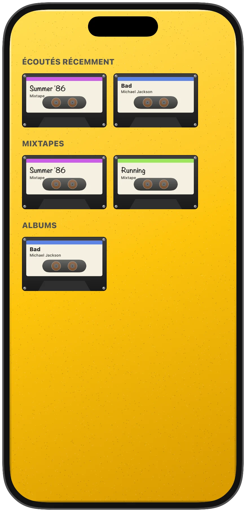
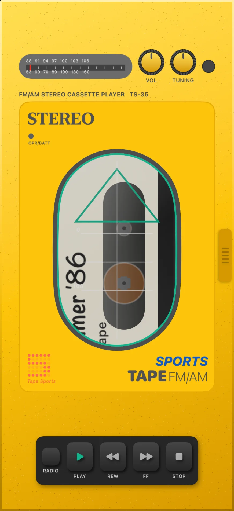
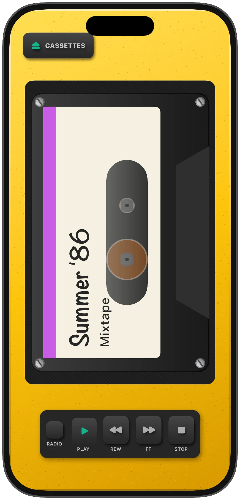
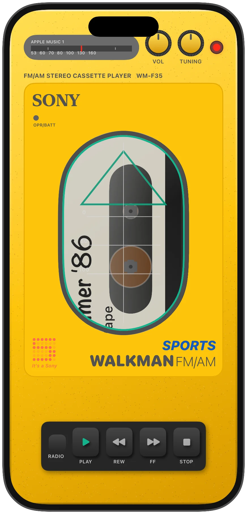
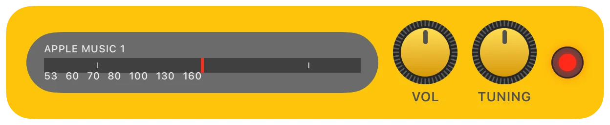
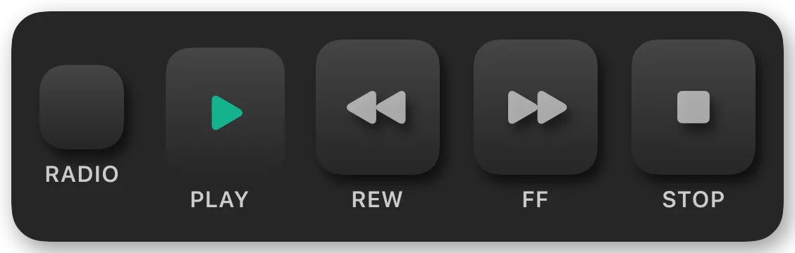
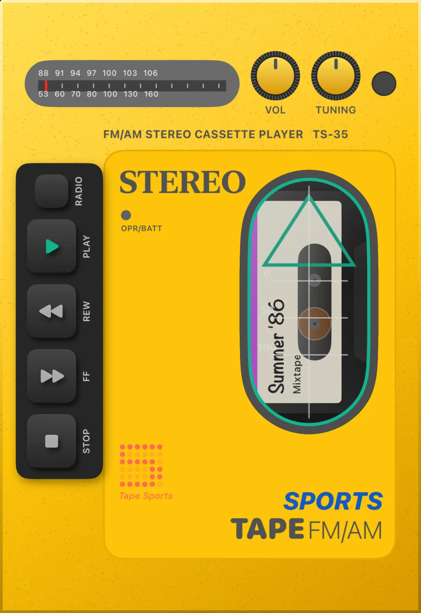
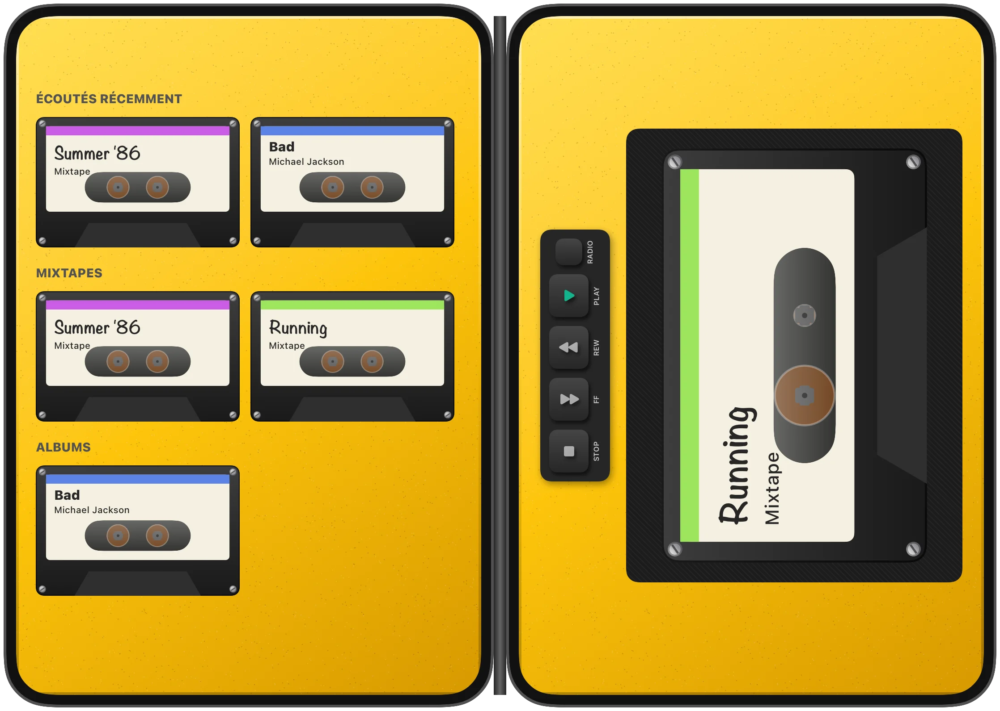

Vos playlists deviennent des cassettes
Ouvrez le couvercle : vos écoutes récentes, vos mixtapes et vos albums sont rangés sur trois rayons. Choisissez une cassette, refermez, elle joue.
Le baladeur cassette jaune des années 80, dans votre iPhone.
Vos playlists et albums Apple Music deviennent des cassettes. Une radio se règle à la molette. Les touches en caoutchouc font clac. Et sur iPhone Duo, ouvrir le téléphone, c'est ouvrir le baladeur.

Toutes les images sont les vraies vues de l'app. Les sons sont ceux de ses touches.
Une face avant jaune, un couvercle qui s'ouvre d'un geste sur le loquet, et tout ce qu'on attend d'un baladeur à cassettes.

Ouvrez le couvercle : vos écoutes récentes, vos mixtapes et vos albums sont rangés sur trois rayons. Choisissez une cassette, refermez, elle joue.

Nouveau
Derrière la vitre ou couvercle ouvert, c'est la même cassette, à la même taille et au même endroit. Rien ne saute quand vous ouvrez.

Nouveau
RADIO capte vos stations récentes et les radios en direct d'Apple Music. TUNING passe de l'une à l'autre, le nom s'affiche sur le cadran et la prise casque s'allume. PLAY revient à la cassette, là où vous l'aviez laissée.


Nouveau
Un appui sur REW ou FF saute une piste, un appui long rembobine. Chaque touche a son clac mécanique et sa vibration, synthétisés à la volée, sans fichier audio. La molette VOL règle le volume du téléphone.
La charnière est le couvercle. Fermé, l'écran extérieur est la face avant du baladeur. Ouvert comme un livre, le rack est à gauche et le lecteur à droite.


Tape Sports arrive bientôt sur l'App Store.